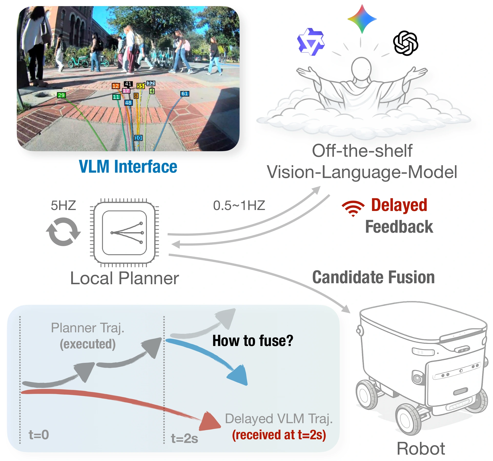
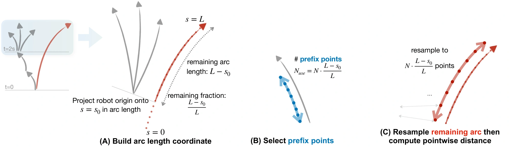
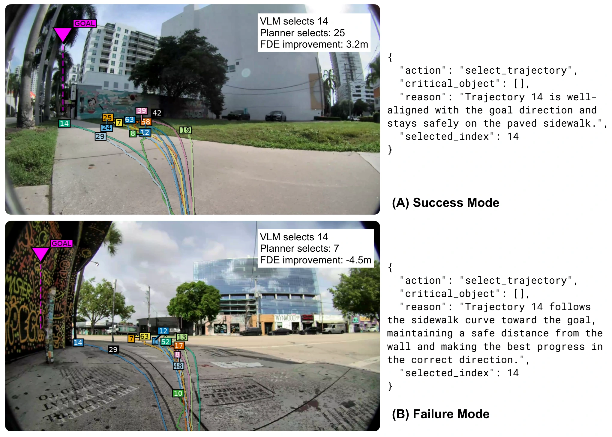
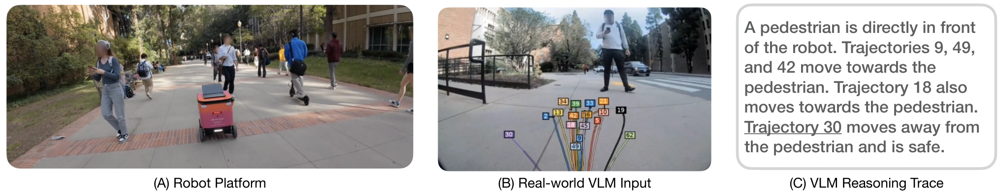

Slow Brain, Fast Planner:
Latency-Resilient VLM-Augmented Urban Navigation

Abstract
Learning-based planners for sidewalk navigation can generate diverse candidate trajectories in real time, yet their scoring functions often fail to select the best trajectory in challenging situations, outputting trajectories that make the mobile robot drive onto grass, toward pedestrians, or in the wrong direction, even when better candidates exist in the same set. We call this the trajectory scoring gap: in real-world sidewalk navigation, the gap between an anchor-based planner’s top choice and the best possible candidate is substantial, likely due to limited high-level scene understanding capability of the planner. Rather than replacing the planner with an end-to-end Vision-Language-Action model, we propose a VLM-Planner interface that uses a VLM to select a candidate index from the planner’s proposal set and then fuse it with the planner’s initial output. However, VLMs take 1–3s per query and so cannot directly drive a 5–20Hz control loop. We contribute a training-free, latency-resilient trajectory-level fusion layer that turns a stale VLM selection into real-time planner scoring via geometric similarity with exponential decay. On ∼2,000 challenging real-world scenarios (e.g., junctions, pedestrian encounters), VLM selection achieves 30% ADE reduction versus the planner’s best selection, while the planner remains competitive in routine situations. In simulation, Score Fusion maintains >80% success rate with delays up to 5s. We demonstrate the full system on a mobile robot navigating challenging campus sidewalks with varied network latency.
Fusing delayed VLM guidance
The VLM’s selected trajectory is already stale when its response arrives. We compensate for robot motion, compare the remaining trajectory with fresh planner candidates, and add a similarity-based bonus that decays with age.

Trajectory selection

Real-world deployment

BibTeX
@misc{peng2026slowbrainfastplanner,
title={Slow Brain, Fast Planner: Latency-Resilient VLM-Augmented Urban Navigation},
author={Zhenghao Peng and Honglin He and Quanyi Li and Yukai Ma and Bolei Zhou},
year={2026},
eprint={2606.20458},
archivePrefix={arXiv},
primaryClass={cs.RO},
url={https://arxiv.org/abs/2606.20458}
}